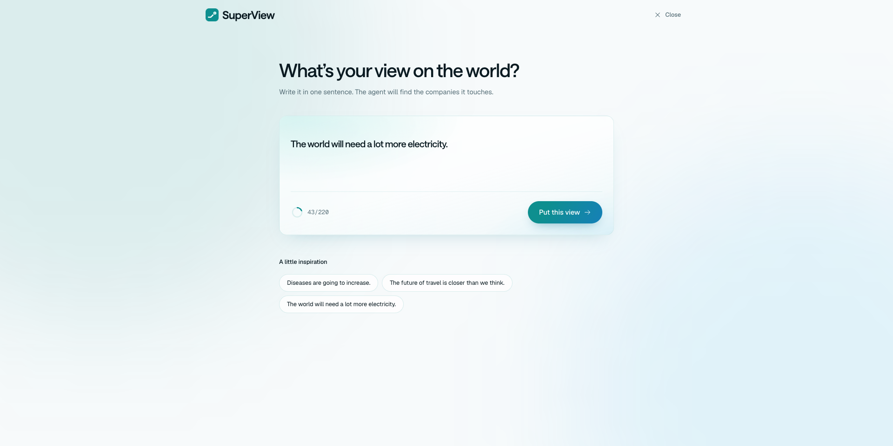
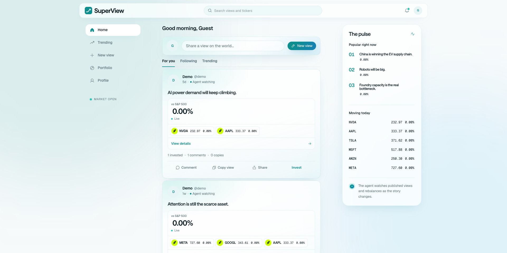
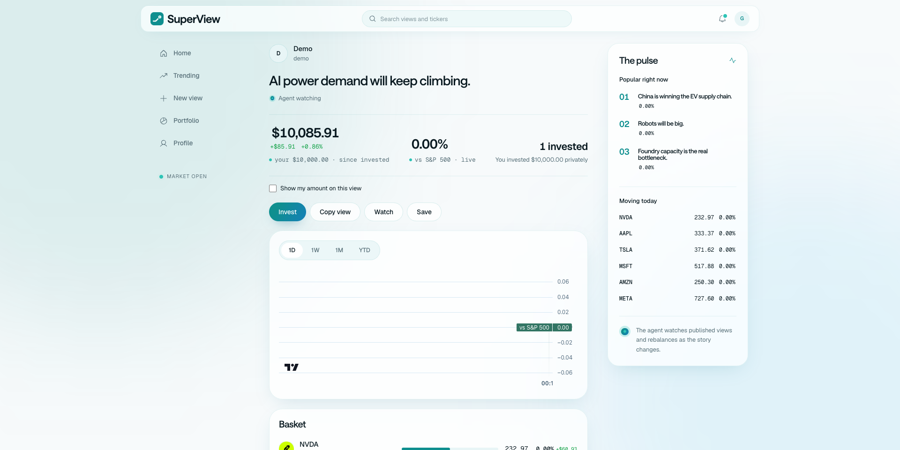
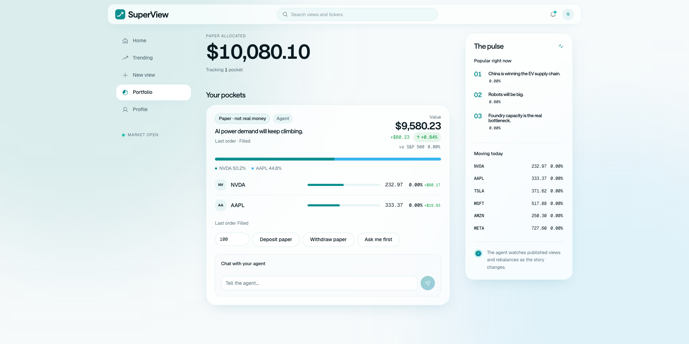

The Social Desk for Investable Beliefs
You type a view. An agent builds a researched Stock Token basket. Watch whether that idea beats the S&P 500 on live markets.
Investment beliefs have no operating system
A thesis can be written anywhere. But turning it into a researched, structured and measurable portfolio still takes a human to do everything in between.

SuperView is the social desk for investable beliefs.
It turns one sentence into a constrained stock token basket, then tracks it live against the S&P 500.
State a market thesis in plain English. No tickers required.
Researches eligible stock tokens and turns the thesis into a portfolio.
Every published view is benchmarked live against the S&P 500 from day one.
Write the chart. Trade the book.
SuperView treats astrology as a real market view — not a horoscope feed. Transit language becomes a researched Stock Token basket, then faces the S&P live.
“Mars enters Aries under a fire-heavy sky. Heat, metals, and the machines that feed both.”
Planets and timing only. No tickers typed. The agent has to earn every name.
-
XOM
Exxon Mobil 30%Energy · fire transit
-
FCX
Freeport-McMoRan 26%Copper · industrial metal
-
CAT
Caterpillar 22%Machinery · capacity rebuild
Astrology writes the view. Research sizes the book. The S&P keeps the score.
From a sentence to a scoreboard in six steps
One simple loop. From thesis to portfolio to track record.
One sentence about the world. “The world will need a lot more electricity.”
Agent maps the belief to the tokenized stocks.
Weights sized by conviction. Not a ticker dump.
Lands on the feed with live tickers on the post.
Every published view carries a live S&P 500 mark.
Put your idea to work before your money does.
One sentence becomes a researched basket.

Write a market belief in plain English. SuperView researches eligible tokenized tokens and returns a conviction-sized basket.
Agent proposes. Portfolio rules decide what ships.
Published views live on a public feed.

Every published view is a full portfolio on the feed. The thesis and holdings sit on one post with a live mark.
Thesis, holdings, and capital on the same post.
Every view gets scored against the S&P.

A published view tracks its basket live against the S&P with Robinhood prices on the same page.
Proof sits with the idea. Public and live.
Try it with paper money first.

Practice the basket on live market prices with a real paper ledger and start investing before your money does.
Real ledger. Live prices. Sentence to S&P mark.
Idea capital is already huge. Personal books can finally settle onchain.
Others solve the steps. SuperView solves the loop.
Research, social, portfolios, and execution already exist in separate products. SuperView brings them together around one public, measurable investment thesis.
The thesis becomes the portfolio. The portfolio becomes the conversation. Everything lives in one View.
Every View is benchmarked against the S&P 500 from day one. Performance stays public and live.
SuperView turns a market thesis into a researched and sized portfolio. It goes beyond an opinion.
The agent finds the opportunities. Portfolio rules control what gets published.
Every published View keeps its original portfolio. The thesis cannot change after the result.
People can discover a view, follow it, invest in it and put capital behind it.
Team built for Financial rails + AI Infra
Mohit Bhat
Web3 infrastructure engineer across 15+ networks. Ex Fleek Network, Ex Singularity, Ex Accubits. 60+ hackathon wins, ETHGlobal finalist 4x, GSoC, Summer of Bitcoin, Ethereum India Fellow.
Jatin Gupta
Backend and fintech infrastructure engineer. Owns collections systems at Paisabazaar Payments. Experience across payments, cloud infrastructure, decentralized AI compute, and high-scale APIs.
Social creates the ideas Brokers execute the trades We connects the both That is SuperView